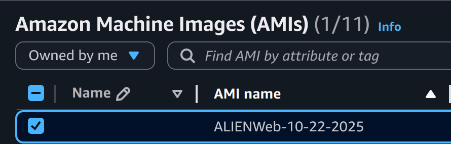
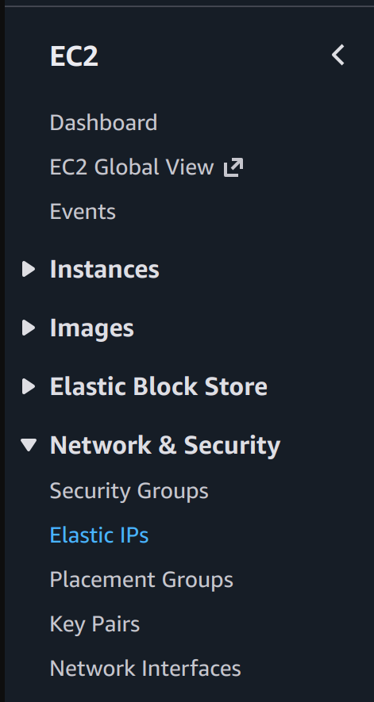
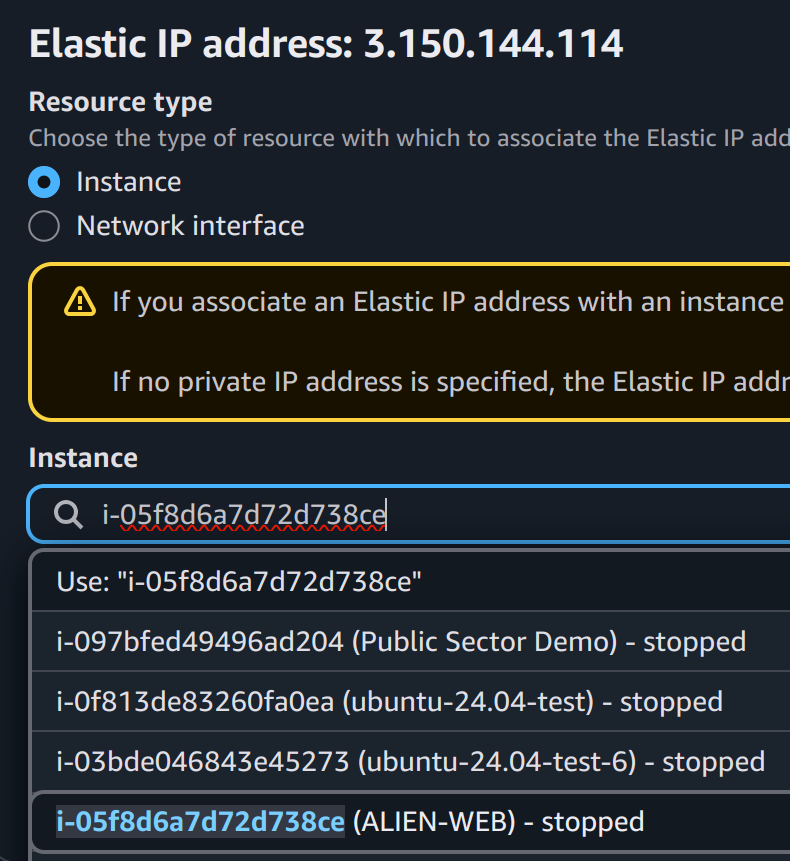
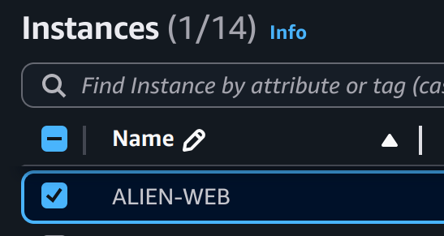
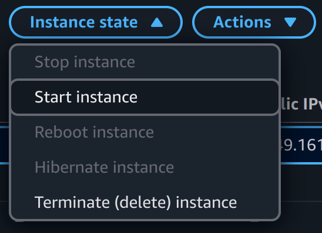
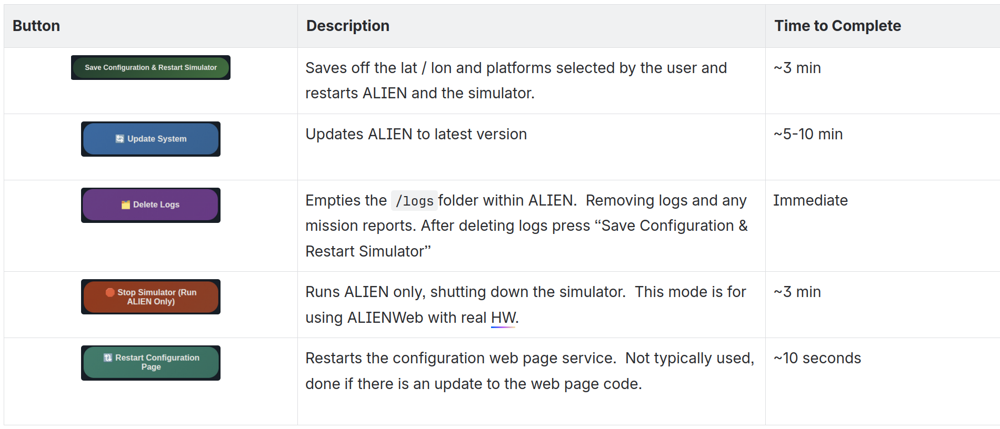
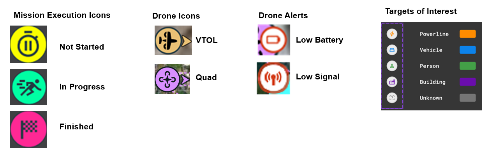
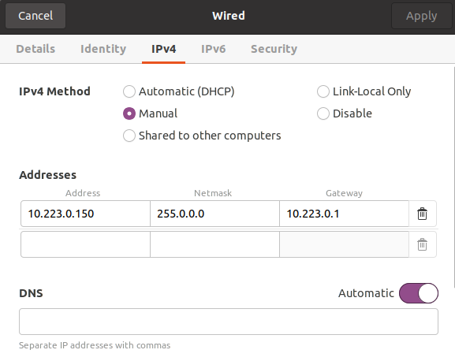
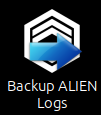

Active Learning and Interaction Engine Web (ALIENWeb) User Guide
Active Learning and Interaction Engine
Web (ALIENWeb)
User Guide
Table of Contents
LAUNCHING AMI 4
NETWORK & PLATFORM SETUP 5
Connect Doodle Labs Radios 5
Stage Robotic Platforms 5
Power on Robotic Platforms 5
OPERATING ALIEN 6
Map Layers 6
Behaviors 7
Patrol Behaviors 7
Vertical and Horizontal Patrol 8
Patrol Behavior Execution 8
Waypoint Behaviors 10
Landing Behavior 10
Waypoints Execution 10
The termination procedure will be the same as patrol. 11
Saving a Mission 12
Using a Presaved Mission 12
Deleting a Presaved Mission 12
View Video Stream 12
SHUTTING DOWN ALIEN 13
Stop ALIEN 13
Backup ALIEN Logs 13
COMMON BUGS AND SOLUTIONS 14
VTOL 14
Boot Error 14
When to restart ALIEN 14
Best Battery Practices 14
Instruction Manuals 16
T2 Cruza 16
ModalAI Starling 16
CQ3 Battery Charger 16
LAUNCHING an AWS EC2 Instance via ALIENWeb AMI
- Obtain the latest ALIENWeb AMI from the AWS store
- Select the AMI from your AMI List
 - Launch an EC2 Instance from that AMI
- Go to the Elastic IP Page in EC2 Sidebar Menu
 - Allocate an Elastic IP Address to your Instance
- You will get a confirmation at the top of the page with your ALIEN.WEB.ELASTIC.IP
- Associate the IP Address with your Instance
- Select the EC2 Instance you create earlier
 - Click Associate
- Start your EC2 Instance (if not already started)
- From your Instances list, select the EC2 Instance
 - In the top right corner, select the Instance State dropdown and Start

- Wait about 3 minutes for the Instance to spin up and settle
- Open Google Chrome
- To view ALIEN:YOUR.ALIEN.WEB.ELASTIC.IP:8282
- To view the Simulator Config: YOUR.ALIEN.WEB.ELASTIC.IP:7777
OPERATING ALIENWeb
ALIENWeb Config and Sim
ALIENWeb comes with a bootloader simulator so that you can practice and plan missions even without robots attached. The simulator will start automatically with the number and type of platforms you choose.


If you want to use real robots with no simulated robots, stop the simulator using the “Stop Simulator” button and follow the network and platform setup section

Map Layers
Satellite: Turn on/off the satellite map
TOI: Visual Targets of Interest detected
Geofence: “No fly zone” outside of AOI
Beacons: Robotic platforms available to mesh
Path: Waypoint paths
Waypoints: Calculated waypoints
Signal Emitters: Medium confidence location of 915MHz emitter (Requires add on radio)
RF Map: Signal Strength Map for radio emissions
Behaviors
ALIEN supports the following features for all behaviors. Note that some features are mutually exclusive (indicated by numbered superscript).
Feature | Description |
Dynamic Replanning | The periodic assessment & replanning of a behavior if the number of platforms assigned to the behavior change due to factors such as communication loss, manual Return to Base (RTB) command, hardware loss / failure, etc. |
Loop Behavior1 | Platforms respectively navigate to their first waypoint once their final waypoint is reached for currently executing behavior. Initial position / starting waypoint is ignored. |
Return to Base (RTB) on Completion1 | Platforms respectively navigate back to their initial position / starting waypoint after reaching their final waypoint for currently executing behavior. |
Land on Completion1 | Platforms respectively “land” upon navigating to their final waypoint for currently executing behavior. |
Patrol Behaviors
Dynamic Replanning | Looped Behavior | RTB on Completion | Land on Completion |
✅ | ✅ | ❌ | ❌ |
Patrol subdivides a specified Area of Interest (AOI) into n areas, where n is equal to the number of platforms assigned to the behavior, & creates a patrol route for each assigned platform. Platforms performing their route will loop & continue their patrol route until notified to perform a different behavior by the user or the triggering of a safety threshold, such as but not limited to, reaching platform battery safety limit. Patrol behaviors support dynamic replanning & will periodically reassess if a new plan is required.
Vertical and Horizontal Patrol
Vertical Patrol and Horizontal Patrol are characterized by the use of directional patrol lanes to generate lawnmower patrol routes for a user-specified Area of Interest (AOI). AOI size & platform waypoint Acceptance Radius are taken into account when calculating patrol routes to provide a form of passive collision avoidance.
Patrol Behavior Execution
- Open the Mission Panel
- Move your cursor to the top right side of the screen.
- Click the “+” icon or mission drawer toggle.
- The mission panel expands in the bottom left corner displaying Behavior, Neurons, and Altitude Settings.
- Flight Settings
- Under Behavior select Patrol
- Select desired amount of Neurons
- Input Altitude Settings
- Draw mission
- For Patrol’s you must draw a polygon with at least 3 points around the boundary of your AOR
- Plan Mission
- Select Plan in the middle of the screen
- You can press LOG in the bottom right to make sure there are no problems and to see successful messages
- Wait for logs to read Planning successful or the red mission box to appear on the map.
- Execute
- When you press execute the mission name will populate in the top right with the mission running icon showing.
- You will see the drone moving on the map in real time.
- Ending a mission
- The drones will continue to Patrol until recalled by user or the battery falls below threshold
- For termination of the mission by the user you have multiple options
- Select RTB All
- Not recommended as it will lock out all drones currently connected to ALIEN
- Select the individual drone from the left side and press RTB
- Select the mission from the top right and press either RTB or Dismiss
NOTES:
- Landing for multi-VTOL flights: The best way to ensure safe landing is to RTB platforms one at a time, from closest to furthest away from the desired landing point.
- When operating with VTOL, only use horizontal or vertical patrol.
- Users are responsible for manual review of planned routes and manual control intervention to prevent incidents.
- Plan on one VTOL for every 500 square meters, no more than 3 per 1 square kilometer.
- When flying multiple VTOL’s in either Horizontal or Vertical Patrol, on the first pass, a VTOL will fly past its way point and turn while the other VTOL is headed to its first way point. This may cause a collision depending on weather conditions.
- Set the landing altitude to the current behavior altitude to avoid drastic altitude changes. Example if performing patrol at 50m, use 50m when planning a land behavior.
Waypoint Behaviors
Dynamic Replanning | Looped Behavior | RTB on Completion | Land on Completion |
❌ | ❌ | ❌ | ✅ / ❌ |
Set Waypoints and Land enables a user to specify a sequential series of waypoints followed by Land or Hover / Loiter action at the final waypoint. Dynamic Replanning and Looped Behavior are not currently supported in these behaviors. VTOL will loiter (fly in a loop) vs hover and its planned path will not be displayed in ALIEN.
Landing Behavior
For multi-VTOL flights, the safest way to ensure landing is safe is to RTB from closest to furthest away from the desired landing point.
When ready to complete the mission, select the VTOL which is closest to the Ground Control Station and manually RTB, open the platform information panel and ensure the VTOL has received and is executing RTB.
Once confirmed, select the next closest VTOL and do the same, continue until all VTOL’s have RTB’d.
Note also that using the “Land” behavior will overshoot on its first approach & then circle back when transitioned to land
Set the landing altitude to the current behavior altitude to avoid drastic altitude changes. Example if performing patrol at 50m, use 50m when planning a land behavior.
Waypoints Execution
Open the Mission Panel
- Move your cursor to the top right side of the screen.
- Click the “+” icon or mission drawer toggle.
- The mission panel expands in the bottom left corner displaying Behavior, Neurons, and Altitude Settings.
Flight Settings
- Under Behavior select Waypoint or Land
- Select desired amount of Neurons
- Input Altitude Settings
Draw mission
- For Waypoint and Land you must draw a line with at least 2 points on the path and to the destination you desire.
Plan Mission
- Select Plan in the middle of the screen
- You can press LOG in the bottom right to make sure there are no problems and to see successful messages
- Wait for logs to read Planning successful or the red mission box to appear on the map.
Execute
- When you press execute the mission name will populate in the top right with the mission running icon showing.
- You will see the drone moving on the map in real time.
Ending a mission
- If you selected land behavior then the drone will land and wait further instructions
- If you selected waypoint behavior then the drone will hover at final way point
- The termination procedure will be the same as patrol.
Saving a Mission
- Click the Add Mission Icon at the top right
- You will see this at the top of the mission planning panel
- Build your mission (see instructions in “RUNNING A MISSION” section below)
- Select the Save Mission as Preset Button
- You will see the Save as a new preset change to the preset.
Note: Currently you can’t change the name of the saved mission, so take note manually
Note: Currently the save mission feature will only save the AOI for a PATROL BEHAVIOR mission.
Using a Presaved Mission
- Select the presaved mission from the dropdown
- Select the Checkmark
- The mission will populate on the map
- You can adjust mission parameters and then Plan and Execute as normal
Deleting a Presaved Mission
- Select the presaved mission from the dropdown
- Select the Trash Icon
- Mission will be removed from the list
View Video Stream
- Select Drone on the left side of the screen
- Select
- To Exit the video mode select
NETWORK & PLATFORM SETUP
Connect Doodle Labs Radios
- Connect USB-C to laptop attached to Doodle labs radios connected to ALIENWeb
- Turn on radio by holding button on bottom of battery
- Go to Laptop Network Settings
- Set Static IP (10.223.0.150) and Subnet Mesh (225.255.0.0) in Wired IPv4 settings
- This is typically a one time setup

Stage Robotic Platforms
- Position Platforms 10m apart (limitation of Doodle Labs Mesh Network)

Power on Robotic Platforms
- Plug in power supply on staged platforms
- Neurons will appear in the ALIEN Vehicle List
- Ineligible neurons will be greyed out.
- Recycle power on UxS to clear errors.
SHUTTING DOWN ALIEN
Stop ALIEN
This stops the services and shuts down the program
Backup ALIEN Logs
This zips up the previous logs and clears the application memory

COMMON BUGS AND SOLUTIONS
VTOL
Manual Control When a user takes over manually, the VTOL will stay in whatever mode it was previously in.
Boot Error
Sometimes when the quads boot there is an error and when a mission is executed some of the quads won’t take off. To avoid this when you first turn on the drones,
- Click on each drone and check altitude, there should be micro adjustments. If you see the drone's altitude has not changed:
- Unplug the battery from the drone and plug it back in and recheck.
- If all drones in the mission batteries are in constant change then they are ready to fly.
When to restart ALIEN
- Every time you press “RTB all” power cycle the robots and restart ALIEN entirely
- If UI is frozen and a refresh of the browser does not fix the issue, restart ALIEN
Best Battery Practices
- Store at 3.8V per cell (about 50-60% charge)
- Keep them in a fireproof LiPo bag or ammo can
- Store in a cool, dry place away from direct sunlight
- Use the provided balance charger
- Charge at 1C rate or lower
- Stop charging if the battery puffs or swells and discard
- Don’t discharge below 3.3V per cell
- Let batteries cool to room temperature before charging
- Do not leave them fully charged for more than 2-3 days
- Check voltage monthly if storing long term
- Expect ~250 charges before decommission
- Store at 3.7V per cell (about 40-50% charge)
- Less volatile than LiPo but still use a safe container
- Store in a cool, dry place away from direct sunlight
- Use the provided balance charger
- Charge at .5C-1C rate
- Don’t discharge below 3.0V per cell
- Let batteries cool to room temperature before charging
- Do not leave them fully charged for more than 2-3 days
- Check voltage monthly if storing long term
- Expect ~500 charges before decommission
Instruction Manuals
T2 Cruza
https://www.heewing.com/pages/t2-instruction-manual
ModalAI Starling
https://www.modalai.com/products/starling-2?variant=48173890208048
CQ3 Battery Charger
https://www.ev-peak.com/wp-content/uploads/2023/04/CQ3.pdf